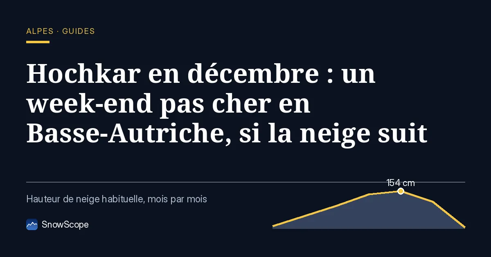

Hochkar en décembre : un week-end pas cher en Basse-Autriche, si la neige suit
Hochkar peut marcher pour un week-end de décembre au départ de Vienne, mais la neige n'est pas garantie. Typiquement le 15 décembre, la moyenne montagne (1 583 m) affiche 38 cm, avec 63 % des hivers voyant 30 cm ou plus la semaine du 15 au 21 décembre. Le tarif est simple : les forfaits journaliers en ligne commencent à 32,90 EUR les jours calmes.
Consultez les prévisions neige en temps réel pour Hochkar sur l'application SnowScopeHauteurs de neige, alertes poudreuse et carte 3D, gratuitement.
Quand la neige de décembre est suffisante
Hochkar s'élève à 1 788 m, le télésiège le plus haut de Basse-Autriche. Sur ses 46 hivers d'enregistrements, le sol n'a jamais été nu à la base (1 378 m) le 15 décembre, donc il y a toujours un peu de neige. Ce qui compte, c'est s'il y en a assez pour skier.
La fiabilité change au cours du mois. La première semaine de décembre (1er au 7 décembre), seulement 43 % des hivers ont eu 30 cm ou plus à la base. À la mi-décembre, ce pourcentage monte à 52 %, et à la semaine de Noël il atteint 61 %. En moyenne montagne, les chances sont meilleures : 59 % du 8 au 14 décembre et 74 % à la semaine de Noël.


L'altitude fait la différence
Le sommet de la montagne raconte une autre histoire. Typiquement le 15 décembre le pic (1 788 m) affiche 49 cm, contre 32 cm à la base et 38 cm en moyenne montagne. 72 % des hivers ont eu 30 cm ou plus au sommet la semaine du 15 au 21 décembre, montant à 80 % la semaine de Noël.
La base est le point faible. Les années maigres (1 sur 10) ne voient que 8 cm là-bas le 15 décembre. Si vous y allez, skiez d'abord les remontées et les pistes hautes, tant que la couverture est bonne.
La tendance à long terme
La neige de décembre sur cette montagne s'est amenuisée. En moyenne montagne, la moyenne des 15 premiers hivers du relevé (1980-81 à 1994-95) était 51 cm, mais ces 15 derniers hivers (2011-12 à 2025-26) elle a chuté à 29 cm. L'hiver dernier a eu seulement 2 cm le 15 décembre et 3 cm la veille de Noël.
Cela compte pour la planification. Une semaine de décembre fiable ici est maintenant l'exception. La meilleure période est à partir de Noël, quand les anciens régimes de neige livrent encore 74 % de chances d'avoir 30 cm en moyenne montagne.
Tarif et timing
Hochkar utilise une tarification entièrement dynamique par sa boutique en ligne. Les forfaits journaliers pour adultes en décembre 2026 ont varié de 32,90 EUR les jours calmes à 47,90 EUR les jours chargés. Le site officiel dit que les prix en ligne sont environ 15 % moins chers qu'à la caisse.
Il n'y a pas de prix de forfait multi-jour fixe annoncé, ce qui a du sens : la plupart des visiteurs viennent pour un jour ou un week-end. Décidez la même semaine où vous prévoyez d'aller, regardez la météo et SnowScope, puis réservez un jour calme en ligne.
Lachtal : l'alternative à côté
Lachtal en Styrie se situe à 50 km, avec une base plus haute (1 572 m) et un pic plus haut (2 199 m). Sa moyenne montagne (1 885 m) a 46 cm typiquement le 15 décembre et 72 % des hivers avec 30 cm la semaine du 15 au 21 décembre, un peu plus fiable que Hochkar. Un forfait journalier coûte 62 EUR.
Pour une excursion bon marché au départ de Vienne, Hochkar gagne sur le prix. Pour un week-end où la neige est la priorité, l'altitude de Lachtal donne de meilleures chances, bien qu'à un coût plus élevé.
Comment le faire fonctionner
Planifiez tard, pas à l'avance. Début décembre est un pari ; visez la semaine avant Noël ou plus tard. Réservez en ligne pour un jour de semaine quand les tarifs sont les plus bas et la météo prévue est sûre.
Avant de monter, consultez le bulletin d'avalanches du Lawinenwarndienst Niederösterreich (lawinen.report) si vous prévoyez de quitter les pistes balisées. La route est une route de montagne : portez des pneus hiver après toute chute de neige.
Conseils aux skieurs
- Regardez la météo pour la semaine où vous y pensez, pas un mois à l'avance. Les décembres maigres sont maintenant courants ici ; ne réservez que quand SnowScope affiche 30 cm ou plus en moyenne montagne.
- Achetez en ligne et choisissez un jour de semaine calme. Les tarifs dynamiques sont les plus bas quand la demande est faible.
- Commencez par les remontées hautes. Le sommet de la montagne est l'altitude la plus fiable en décembre.
- Apportez des pneus hiver et consultez le bulletin d'avalanches si vous allez hors-piste.
- Si décembre paraît maigre, attendez janvier, quand la profondeur de neige atteint typiquement 61 cm en moyenne montagne.
À propos de ces chiffres
Les hauteurs de neige des stations sont la neige la plus épaisse sur le haut du domaine à la date indiquée ; ce sont des estimations pour une zone, pas une mesure en un point. Les prévisions peuvent changer. Consultez toujours le bulletin d'avalanche officiel avant le hors-piste.
Bulletins d'avalanche officiels: Lawinenwarndienst Niederösterreich
Citer ce bulletin
Pour la recherche, l'enseignement ou la presse : chiffres et graphiques réutilisables librement sous CC BY 4.0 avec cette citation.
SnowScope (2026), Hochkar en décembre : un week-end pas cher en Basse-Autriche, si la neige suit, https://snowscope.app/blog/fr/2026/11/hochkar-december-skiing-vienna-weekend-budget.html, consulté le 2026-11-14
SnowScope (Atlas Labs). (2026, November 14). Hochkar en décembre : un week-end pas cher en Basse-Autriche, si la neige suit. SnowScope snow reports. https://snowscope.app/blog/fr/2026/11/hochkar-december-skiing-vienna-weekend-budget.html
BibTeX
@misc{snowscope2026hochkardecemberskiingvie,
author = {{SnowScope (Atlas Labs)}},
title = {Hochkar en décembre : un week-end pas cher en Basse-Autriche, si la neige suit},
year = {2026},
month = nov,
howpublished = {\url{https://snowscope.app/blog/fr/2026/11/hochkar-december-skiing-vienna-weekend-budget.html}},
note = {Published 2026-11-14 20:11 UTC; accessed 2026-11-14}
}· CC BY 4.0 · Méthodes, données et outils →
Hochkar : neige et température selon l'altitude, cet hiver vs l'hiver dernier (outils) →
Suivre Hochkar
Gratuit : un message quand la neige arrive, et la météo chaque matin.